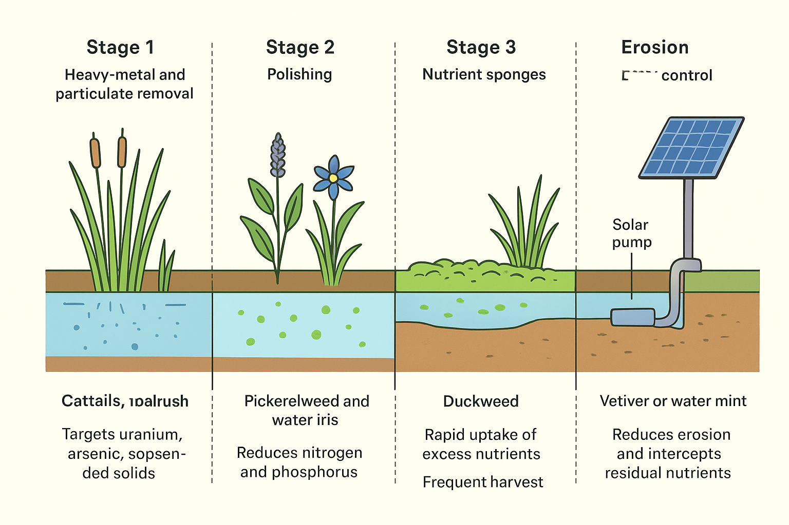

Target Audience / Population
Who is impacted
The primary target population for this proposal are every federally recognized Indian tribe with land located inside the United States. Members, families, and community institutions on these reservations are directly impacted by limited access to consistently clean water.
Challenge Statement
Many reservations receive insufficient federal funding for reliable water infrastructure. As a result, water quality on numerous reservations is poor or inconsistent, with contaminants that cause acute and chronic health issues. This design addresses that gap by adding a low-cost, maintainable filtration layer that augments existing systems without requiring large, centralized spending.
Solution Brief
What we propose
- Layered natural filtration using non-invasive plants (cattails, bulrush, pickerelweed, water iris, duckweed, vetiver, water mint) arranged in four treatment zones.
- Low-cost solar-powered pumps with battery backup to maintain steady flow and ensure operation during low-sun periods.
- Flow limiters and simple mechanical screens to prevent plant overload and reduce sediment transport.
- Harvest cycles and simple monitoring to keep phytoremediation elements functioning and to remove contaminant-loaded biomass for safe disposal or controlled reuse.
Relation to Engineering Grand Challenge(s)
This project primarily addresses the Grand Challenge to provide access to clean water. It also contributes to improving urban and rural infrastructure by augmenting existing systems with resilient, low-cost components and renewable power.
Main Visual
Concept visualization

Existing Technology / Ideas Used
How we leverage proven approaches
We rely on phytoremediation and constructed wetland principles to remove contaminants. The proposed four-zone sequence is:
- Stage 1 — Heavy-metal and particulate removal using regional cattails and bulrush (targets uranium, arsenic, suspended solids).
- Stage 2 — Polishing by pickerelweed and water iris to reduce nitrogen and phosphorus and increase dissolved oxygen.
- Stage 3 — Nutrient sponges like duckweed for rapid uptake of excess nutrients (requires frequent harvest).
- Stage 4 — Vetiver or water mint at banks to reduce erosion and intercept residual nutrients.
Solar pumps and simple flow limiters control residence time so plants are not overwhelmed and erosion is minimized.
Basic Marketing Plan
- Direct outreach to tribal councils, environmental departments, and community leaders.
- Presentations at Native American conferences, community events, and environmental workshops.
- Partnerships with nonprofits and federal agencies for credibility and distribution.
- Open-source documentation and GitHub-hosted project page demonstrating low-cost build and maintenance.
Design Shortcomings & Risks
- Plants require regular harvesting and maintenance; neglect can cause reduced performance and blockages.
- Effectiveness varies by local climate, water chemistry, and contaminant types; site-specific testing is required.
- Solar reliability in low-sun regions may need larger batteries or supplemental power sources.
- Improper disposal of contaminated biomass could reintroduce pollutants if not managed correctly.
Feasibility Study (High-level)
Challenges to real-world implementation
At this current time, there are more parts necessary to fully filter water than what is found naturally, and designing this whole system really has a lot of moving parts that would need to be maintained, adding in cost (which is the whole thing we are attempting to avoid).
Estimated cost & technological challenges: With the natural resources filtering the water, it would be relatively inexpensive for the filtration portion. However, several important functions — such as removing solid waste products, recycling wastewater, and fully purifying highly contaminated water — are not achievable with this solution alone. This design must be integrated with existing municipal or tribal water-treatment systems to be effective. Without those foundational systems operating correctly, the natural filtration route will not succeed. Advances in disinfection and treatment technology could make a predominantly natural solution more feasible in the near future.
Broader applicability: Absolutely. While Native American reservations are disproportionately affected by inadequate water infrastructure, a working final product could be adapted to any community with limited access to clean water. Roughly 26% of the global population lacks ample clean water, so a scalable, low-cost system could have broad impact.
Next Steps
- Engage with a pilot tribe/community to co-design a site-appropriate pilot.
- Conduct water quality testing and species-selection trials.
- Build a small pilot (single canal/flow cell) and monitor for 6–12 months.
The next step would really be to explore advanced treatment concepts that reduce manual maintenance and extend the system's capabilities. One speculative direction is developing a low-cost method (for example, a safe, targeted photonic/laser approach) to break down solid particulates and reduce microbial loads before they reach the natural beds. Coupling that with plant-breeding or engineered regenerative plants that more effectively capture and sequester pollutants could reduce harvesting frequency and operational cost. It's also possible that an unexpected technological innovation will emerge that outperforms these concepts — the design should remain modular to incorporate future advances.